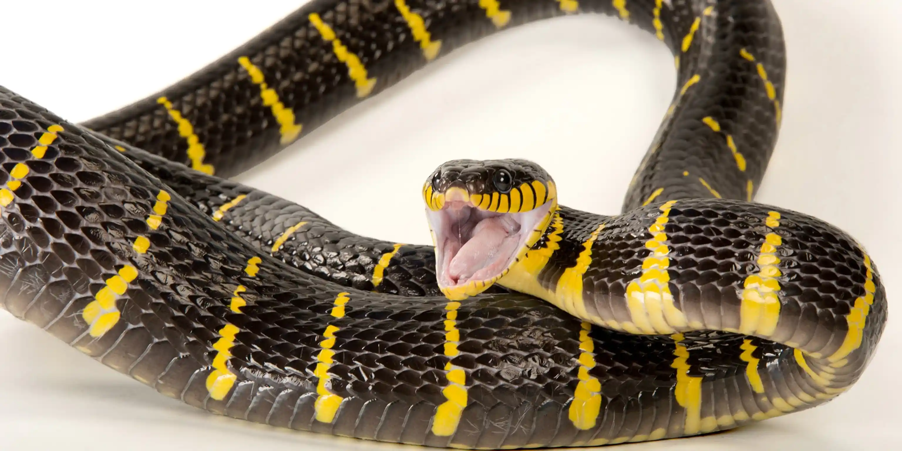
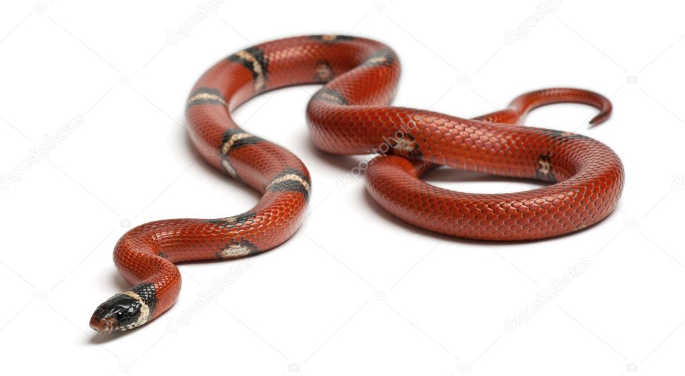

|  |
Uz planētas ir vairāk nekā 3000 čūsku sugu, un tās ir sastopamas visur, izņemot Antarktīdu, Islandi, Īriju, Grenlandi un Jaunzēlandi.
Apmēram 600 sugas ir indīgas, un tikai aptuveni 200 — septiņi procenti — spēj nogalināt vai būtiski ievainot cilvēku. Neindīgas čūskas, sākot no nekaitīgām prievīšu čūskām un beidzot ar ne pārāk nekaitīgajiem pitoniem, nogalina savus upurus, norijot tos dzīvus vai saspiežot tos līdz nāvei. Neatkarīgi no tā, vai tās nogalina, sasitot ar indi vai saspiežot, gandrīz visas čūskas ēd savu barību veselu, dažreiz pārsteidzoši lielās porcijās. Gandrīz visas čūskas ir klātas ar zvīņām, un kā rāpuļi tās ir aukstasinīgas, un tām ir jāregulē ķermeņa temperatūra ārēji. Svari kalpo vairākiem mērķiem: tie aiztur mitrumu sausā klimatā un samazina berzi čūskai kustoties. Ir atklātas vairākas čūsku sugas, kuras lielākoties ir bezzvīņainas, taču pat tām ir zvīņas uz vēdera. |
|---|
|
Čūskām ir arī dakšveida mēles, ko tās švīkā dažādos virzienos, lai sajustu apkārtējo smaržu. Tas ļauj viņiem zināt, kad tuvumā ir briesmas vai ēdiens. Čūskām ir vairāki citi veidi, kā noteikt uzkodas. Atvērumi, ko sauc par bedrēm viņu acu priekšā, jūt siltumu, ko izdala siltasiņu upuris. Un viņu apakšžokļu kauli uztver grauzēju un citu skraidošu dzīvnieku vibrācijas. Sagūstot laupījumu, čūskas var apēst dzīvniekus, kas ir pat trīs reizes lielāki par to platumu, jo to apakšžokļi atdalās no augšžokļiem. Nokļūstot čūskas mutē, laupījumu tur savā vietā zobi, kas vērsti uz iekšu, to tur notverot. |
 |
|---|